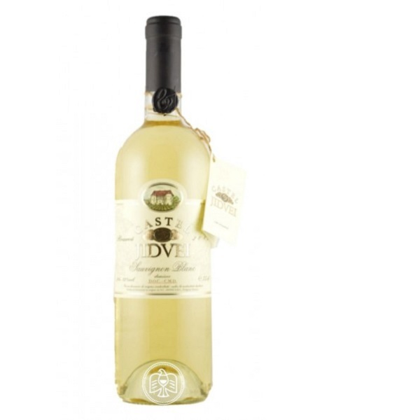
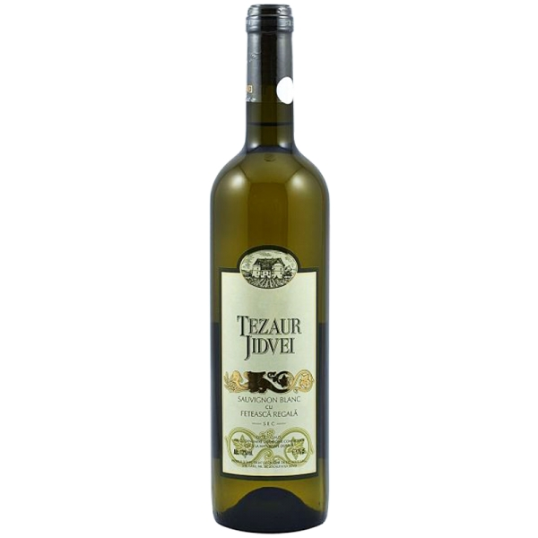
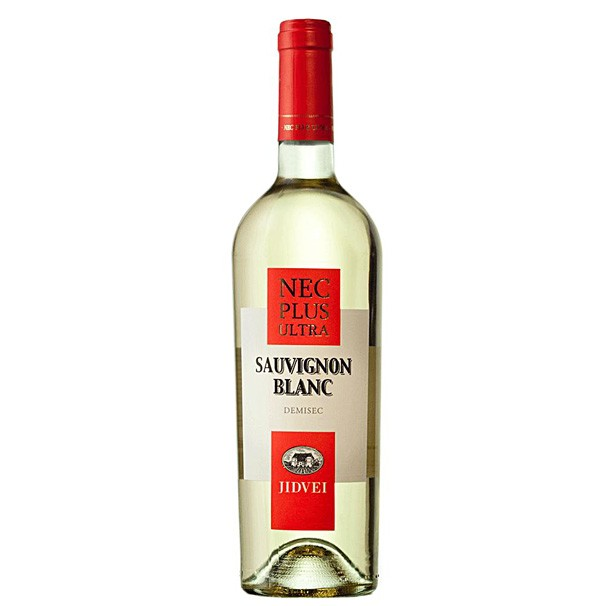
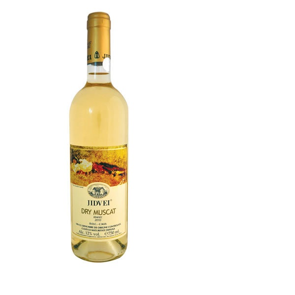
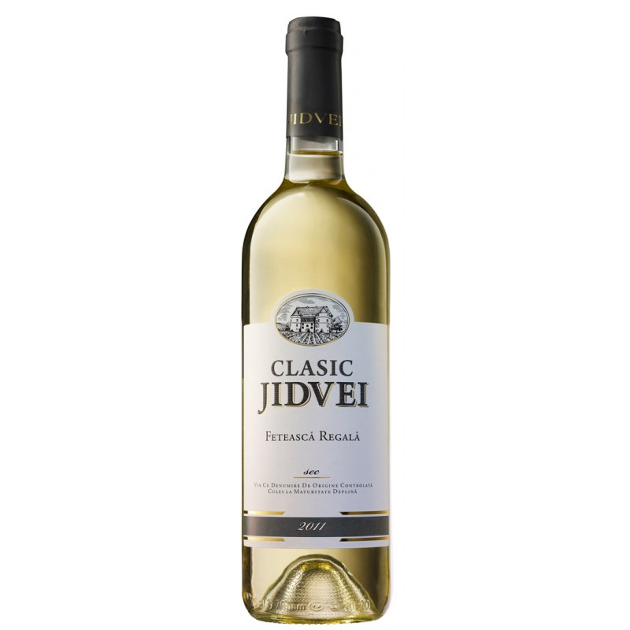
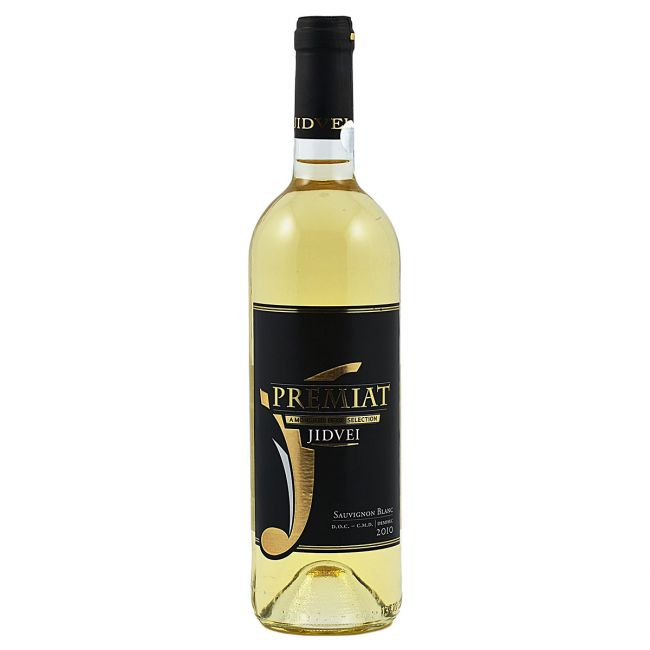
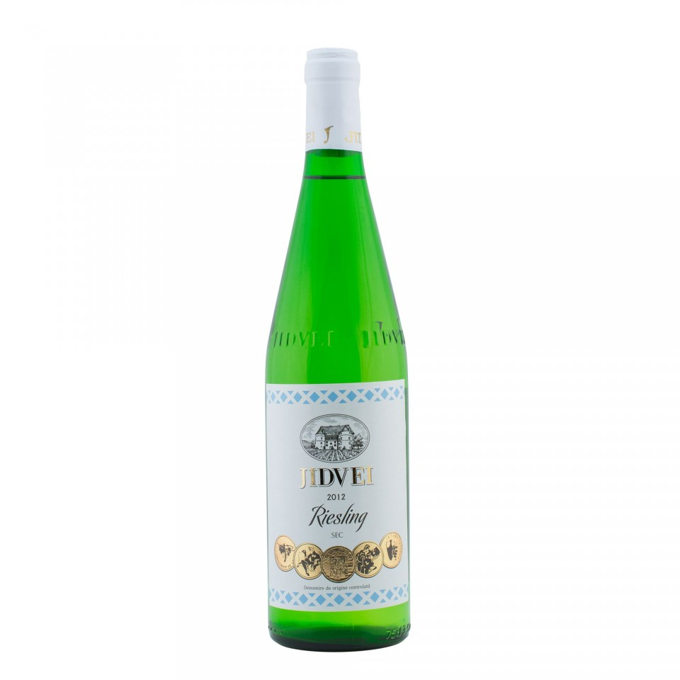
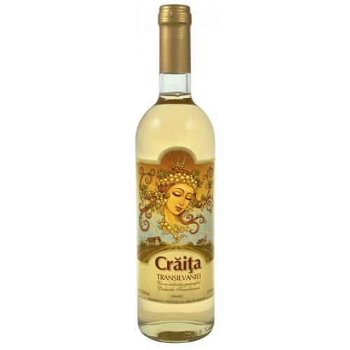

CRAMA JIDVEI
Jidvei dispune de 3 crame, cu o capacitate impresionantă, de peste 270 de mii de hectolitri. Fie că ajung la crama Jidvei, Blaj
sau Bălcaciu, boabele de struguri se vor transforma, grație artei oenologului, în vinuri care păstrează vocația arealului viticol
(terroire viticole).
Crama Jidvei, dată în folosință în 1974, este cea mai mare dintre cramele companiei. Începând cu anul 1999,
tradiția a fost dublată de beneficiile tehnicii moderne, investițiile în această cramă urmărind optimizarea proceselor tehnologice
în vederea asigurării calității și tipicității vinurilor de Jidvei.
Odată intrat în labirintul de săli, descoperi mai întâi vasele
în care se păstrează produsul “viu”, în continuă transformare. Aproape de ele, în vase mai mari de lemn, de 5.000 – 10.000 litri,
se maturează vinuri din cele mai cunoscute soiuri albe: Traminer, Pinot Gris sau Fetească Albă. Tot aici, se regăsesc cisterne de
inox în care se păstrează vinurile pentru a rămâne fructuoase, proaspete și tipice soiurilor din care au fost realizate. Într-o altă
sală, un sistem automatizat de monitorizare a fluxurilor din cramă ține evidența vaselor pline și goale, dar și a drumului parcus de
vin în traseul spre îmbuteliere.
Vinuri:
- 
Castel
- 
Tezaur
- 
Nec Plus Ultra
- 
Grigorescu
- 
Premiat
- 
Clasic
- 
Tradițional
- 
Vin cu indicație geografică